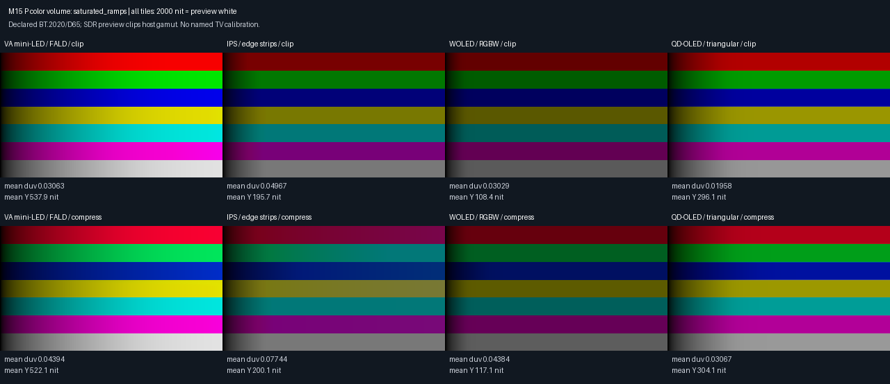
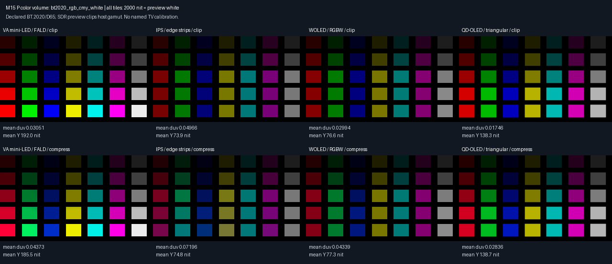
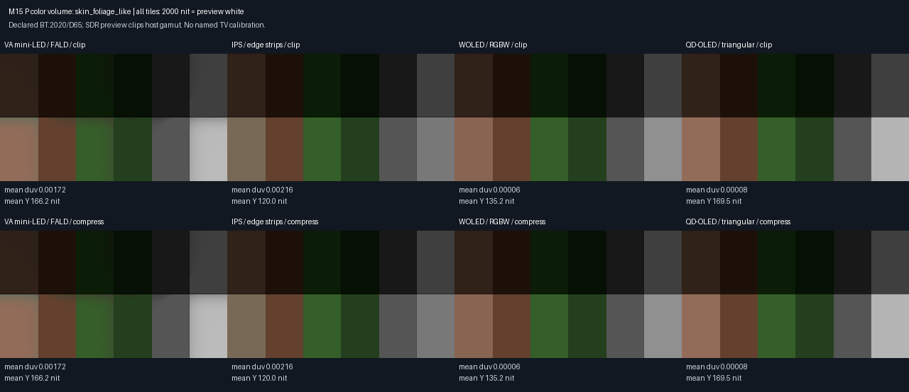
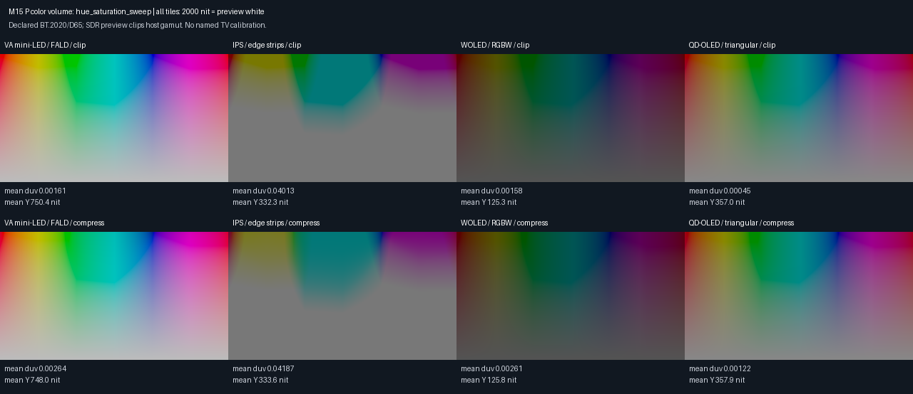

Four placeholder panels, clip and CIE u′v′ hue-ray compression. Every tile uses one shared 2000-nit exposure. SDR clipping limits visual gamut assessment. Errors compare complete pipeline XYZ with declared BT.2020/D65 source intent; u′v′ distance excludes black and does not measure luminance error or perceptual ΔE. No named TV is calibrated. Spectra and measured color-volume fits remain NR.
Exact settings, color matrices, diagnostics and error metrics



